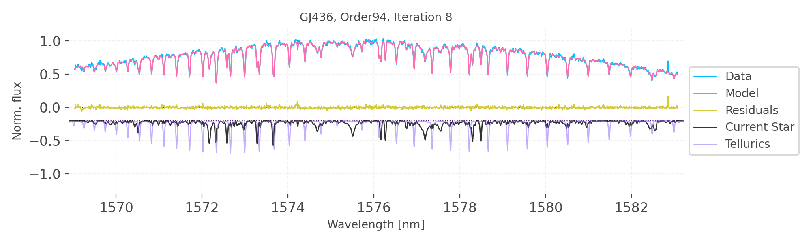
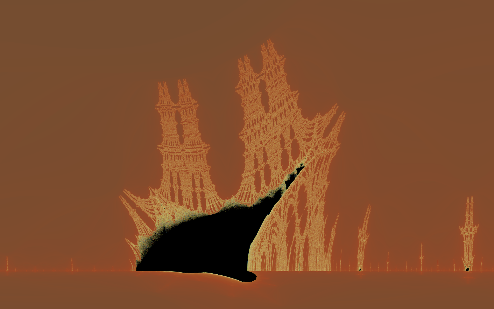

IterativeNelderMead.jl

An Nelder-Mead solver written in Julia. The solver is robust in high-dimensional parameter spaces.
Echelle.jl

Process echelle spectra and generate precise radial velocities with:
EchelleBase.jl - Provides base data types and mathematical functions that can apply to all echelle data.
EchelleReduce.jl - Provides an interface to reduce (calibrate and extract) echelle spectra.
EchelleSpectralModeling.jl - Provides an interface to model 1-dimensional echelle spectra with an emphasis on radial velocities.
Different levels of support are provided for:
Julia codes I've developed for fun
In my spare time, I enjoy coding up mathematical fractals in the complex plane. Here is the burning ship fractal, computed by iterating
\[ z_{n+1} = (|\mathrm{Re}(z_{n})| + i \ |\mathrm{Im}(z_{n})|)^2 + c \]for each point c in the complex plane, starting from the origin. Each pixel is colored according to it's "escape velicity" where brighter pixels escape to complex infinity after fewer iterations.
